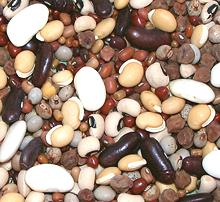

Cooking Dried Beans
Dried beans are nutritious, inexpensive, take little packaging and work
in many recipes. They are generally considered superior to canned beans,
which are actually dried beans reconsitituted, cooked and canned.
Dried beans are far less expensive than fresh "shell beans" because
they are very much easier to shell than beans that are not yet dry,
and don't need to be frozen for storage. There is, of course, some
change in flavor.
More on Working with Beans,
Peas & Lentils.
Storage:
Date your Beans when you buy them. You
would think dried beans last forever, but this is not actually the case
- they should be used within about one year. Beyond that they become more
and more difficult to cook tender. Beyond three years they have to be
ground to flour to use. I have found this true even for dal, so it not
just the skin that's involved, as some writers say. By three years the
vitamin content is almost entirely gone as well.
Salt?
Some hold that if you cook unsoaked beans in water
with salt added before they are completely cooked you will have tougher
beans than with no salt. The Los Angeles Times kitchen says this is
completely disproven by their tests, and other testers are of similar
opinion.
Acid:
Exposure to acids will give you tough beans. Cook
them all you like, they won't become tender. For this reason, beans must
be fully cooked before adding to acidic sauces and chilis. This also
applies to potatoes.
Soak or not soak?
We all have times we must cook dried
beans without a pre-soak (8 hours or so for most popular beans), and they
will cook OK, though it takes an extra hour or even more longer, the beans
will likely break apart more, and there may be more farting after
consumption. Mexican cooks do not pre-soak beans, but most ethnicities do.
Necessary soaking times for particular beans will be found in the
Varieties of Beans page.
If your diet is not normally rich in beans, soak the beans, discard the
soaking liquid and rinse well before cooking. This removes some of the
complex sugars that result in flatulence.
It has been noted that beans which have wrinkly skins after a full
soaking will not cook tender.
Brining:
This is a new take on soaking and highly
recommended. Use the normal soaking time, but with about 1/2 Tablespoons
of Salt per cup of beans added to the soaking water. I have found a 16
hour brine can make some "difficult" (moderately over aged) beans usable.
Rinse well after draining.
The salt makes the skins more permeable, resulting in beans that
cook more quickly, more evenly and with less breaking up than any other
method. In my opinion it also reduces flatulence. Cooks Illustrated
claims to have discovered brining, but I have seen references in cook
books that are far earlier than this "discovery".
Quick Brine:
This method seeks the advantage of brining
but taking less time. Put your beans in a pan with water sufficient for
soaking, and add Salt, about 1 tablespoon per cup of beans or 3
tablespoons per quart of water. Bring to a boil and take off the heat.
Let stand for 1 hour. Drain and rinse.
Lentils
are rarely soaked and if they are it's for no longer
than an hour or so. Red lentils in particular are peeled so they cook
very fast and are never soaked.
Dal:
This is split and peeled beans, peas and lentils.
Dal is not pre-soaked unless a particularly creamy texture is desired.
In any case, dals need only a fraction of the soaking time of whole
beans, peas and lentils.
Cooking:
Soaked Beans should be placed in a pan with
cold water to cover by at least 1/4 inch (much more water if they
haven't been soaked). Bring to a boil uncovered to avoid foaming over.
For some beans you may wish to skim off the foam that rises. Cover
and keep at a simmer until just tender. If allowed to boil they will
be damaged and more prone to falling apart.
gtp_beandry1 120401 var - www.clovegarden.com
©Andrew Grygus - info@clovegarden.com - Linking to and
non-commercial use of this page permitted